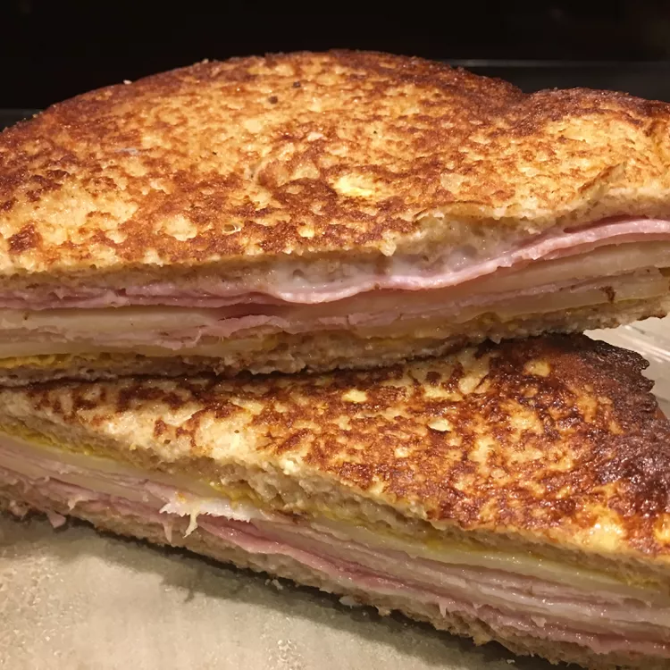

Monte Cristo Sandwich

Dish Description:
This Monte Cristo sandwich with ham, turkey, and Swiss cheese slices is dipped in an egg and milk mixture and fried to a golden brown.
A hot alternative to the usual lunch or snack. Try it with berry jam on the side.
Prep Time: 5 mins
Cook Time: 15 mins
Total Time: 20 mins
Servings: 1
Ingredients:
- 2 slices of bread
- 1 teaspoon mayonnaise
- 1 teaspoon prepared mustard
- 2 slices cooked ham
- 2 slices cooked turkey meat
- 1 slice Swiss cheese
- 1 egg
- ½ cup milk
Directions:
- Step 1
- Spread mayonnaise on one side of one bread slice.
- Spread mustard on one side of remaining bread slice and top with alternate slices of ham, turkey, and Swiss cheese.
- Close sandwich with remaining bread slice, mayonnaise-side down.
- Step 2
- Beat egg and milk in a shallow bowl until well combined.
- Lightly grease a small skillet over medium heat.
- Step 2
- Dip sandwich into egg mixture to coat on both sides.
- Transfer sandwich to the hot skillet and cook until golden brown on both sides and cheese is melted.
- Serve hot.